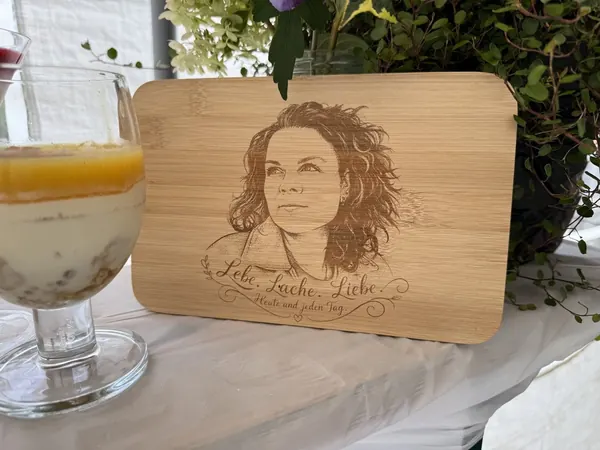
Ein Porträt auf Holz
Holzbrett mit graviertem Porträt und dem Spruch „Lebe. Lache. Liebe. Heute und jeden Tag.“
Materialien / Holz
Individuelle Arbeiten von Herzmade aus Döbern. Lass dich inspirieren und bring deine eigene Idee mit.
Bei Herzmade aus Döbern (03159, Lausitz) entstehen individuelle Holzgravuren mit viel Liebe zum Detail. Holz überzeugt durch seine warme, natürliche Optik und macht jedes gravierte Werkstück zu einem echten Unikat – perfekt für persönliche Geschenke und besondere Anlässe.
Ob Gravur oder Laserschnitt – Holz bietet vielseitige Möglichkeiten:
Durch präzise Lasertechnik sind sowohl feine Gravuren als auch deutlich spürbare Vertiefungen möglich – ganz nach gewünschtem Stil und Material.
Holzgravuren eignen sich perfekt für Geburtstage, Hochzeiten, Muttertag, Weihnachten oder als Firmenpräsent und Erinnerung an Events. Besonders Baumscheiben sind beliebt als natürliche und persönliche Geschenkidee.
Jedes Stück wird individuell gefertigt – von der Idee bis zum fertigen Produkt. So entstehen einzigartige Holzgeschenke mit Charakter.
So persönlich kann Holz sein
Echte Einzelstücke aus unserer Werkstatt.
Tippe auf ein Bild für die Großansicht.

Holzbrett mit graviertem Porträt und dem Spruch „Lebe. Lache. Liebe. Heute und jeden Tag.“
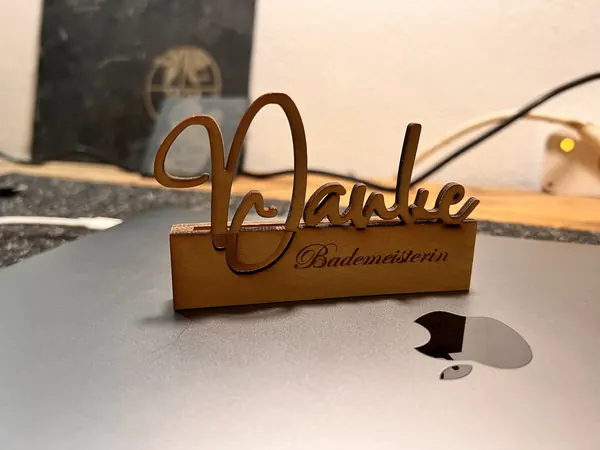
Lasergeschnittene Geschenkkartenhalterung aus Holz mit dem Schriftzug „Danke“ und persönlicher Gravur.
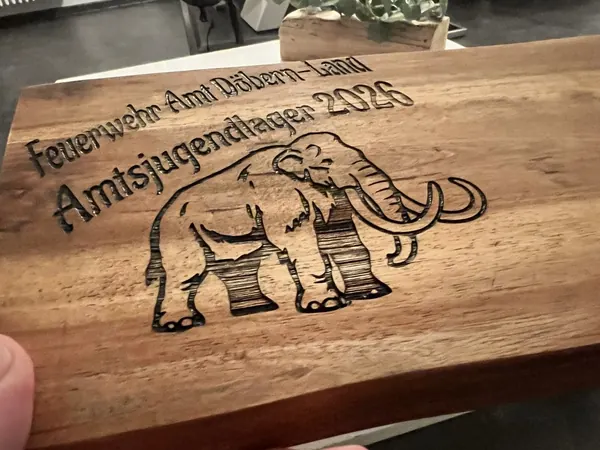
Graviertes Holzbrett als Dankeschön für die Sponsoren des Amtsjugendlagers 2026.
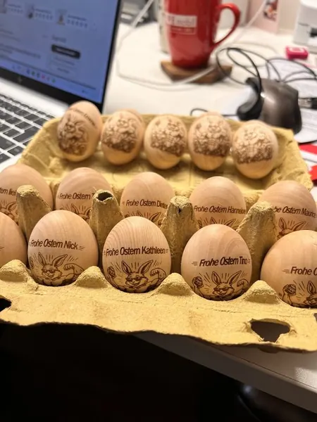
Gravierte Ostereier mit unterschiedlichen Sprüchen und Motiven als persönliche Osteraufmerksamkeit.
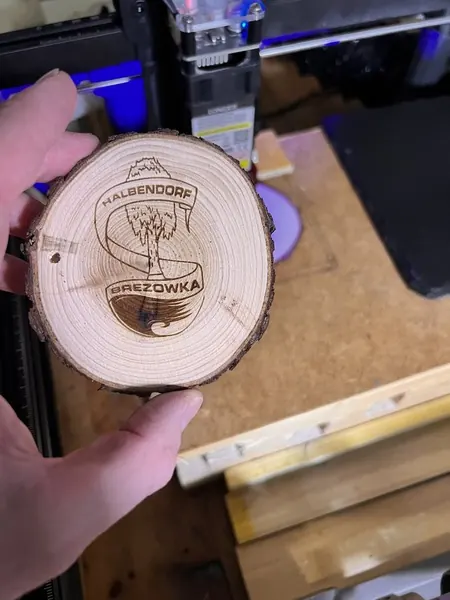
Runde Baumscheibe mit Rinde und einer Gravur des Halbendorf-Motivs mit den Schriftzügen „Halbendorf“ und „Brězowka“.
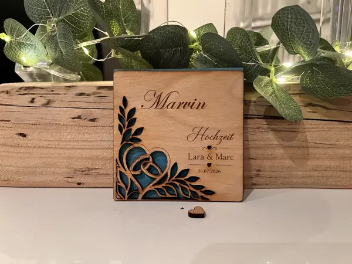
Namensschild als Tischkarte zur Hochzeit, mit lasergeschnittenen Ornamenten sowie graviertem Namen und Hochzeitsdatum.
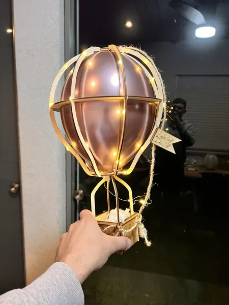
Beleuchteter Heißluftballon zum Polterabend, aus lasergeschnittenen Sperrholzteilen zusammengesetzt und mit einem kleinen Holzanhänger gestaltet.
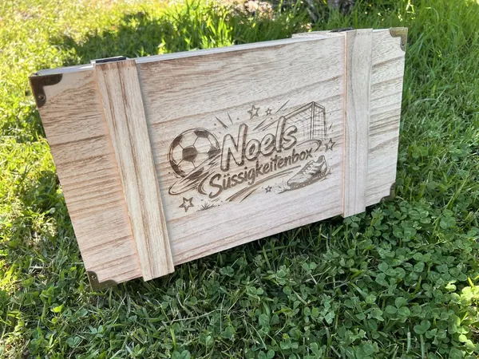
Holzbox zum Geburtstag mit graviertem Fußballlogo und dem Schriftzug „Noel’s Süßigkeitenbox“ auf dem Deckel.
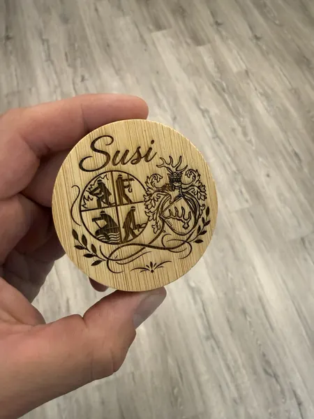
Holzflaschenöffner mit graviertem Feuerwehrlogo, Stadtwappen und Namen.
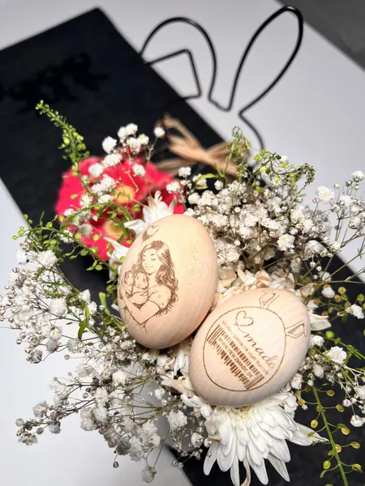
Holz Osterei graviert mit eigenem Logo
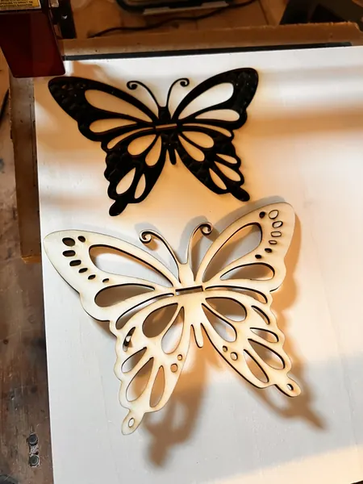
Filigraner Ausschnitt eines Schmetterling als Halterung Reagenzglas Vase
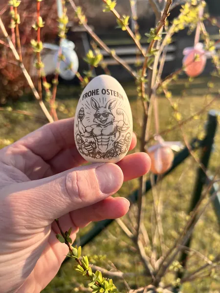
Holz-Osterei mit lustigem, muskulösen Osterhasen
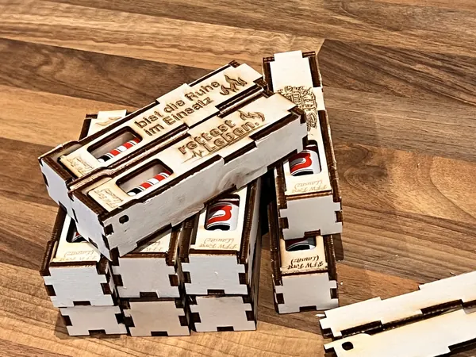
Holzbox für Duploriegel mit „Du“ Spruch
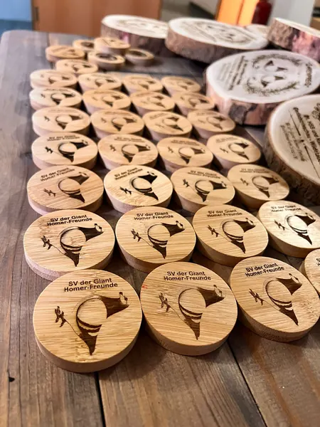
Flaschenöffner rund aus Holz für Tauben Züchterverein
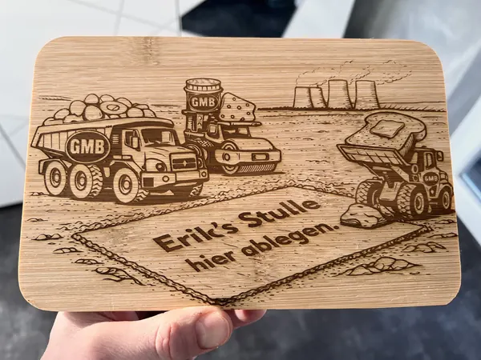
Als kleines Geschenk für einen Freundd der im Tagebau tätig ist und Abends seine Stullen schmiert für den nächsten Arbeitstag, haben wir diese Grafik entwickelt und auf ein Stullenbrett gelasert
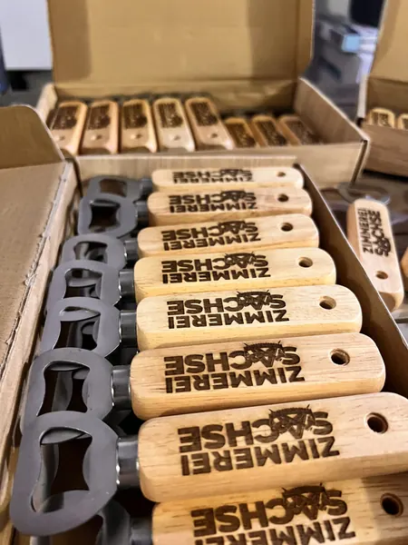
Als Giveaway gedacht, haben wir das Logo der Zimmerei Sachse auf Flaschenöffner mit Holzgriff gelasert. Denn was passt besser zu einer Zimmerei als Holz?
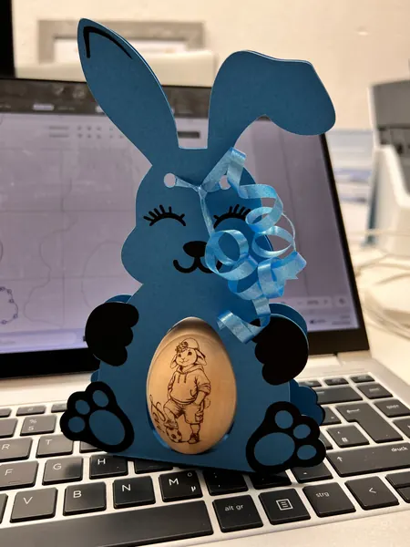
Für mein Sohn Levi habe ich ein Comicosterhasen auf ein Holzei gelasert. Die passende Osterverpackung haben wir mit dem Xtool Cutter ausgeschnitten.
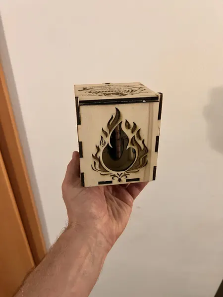
Wir haben Teile für eine Holzbox ausgeschnitten mit dem Laser, um eine Geschenkbox für eine Tasse zu kreieren.
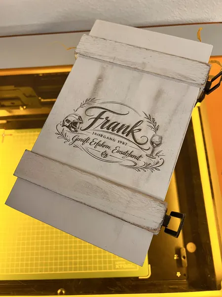
Auf eine Box für ein Weinglas haben wir einen persönlichen Spruch graviert.
Von deiner Idee zum Einzelstück
Wähle ein Produkt und lass dich von unseren Arbeiten inspirieren.
Erzähl uns vom Anlass, deinem Wunschmotiv und dem Menschen, dem du eine Freude machen möchtest.
Gestaltung, Ausführung und Preis stimmen wir persönlich mit dir ab.